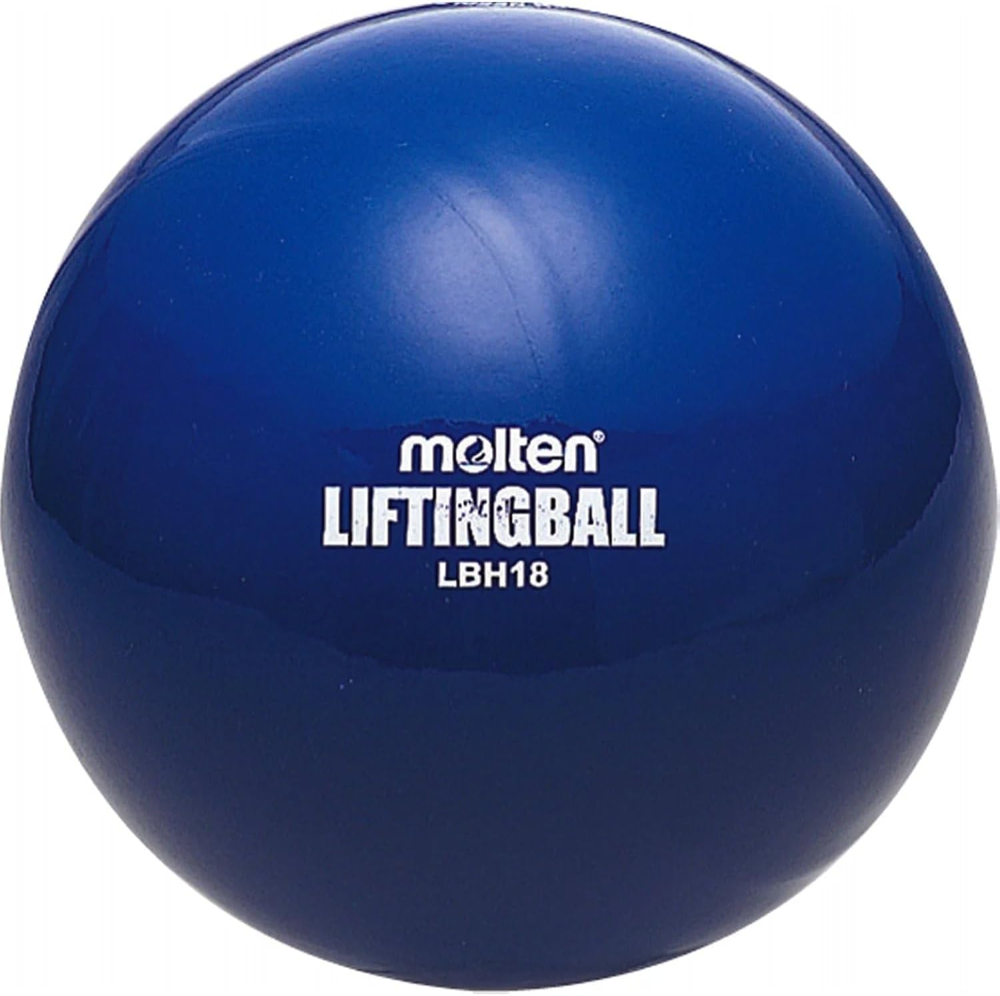
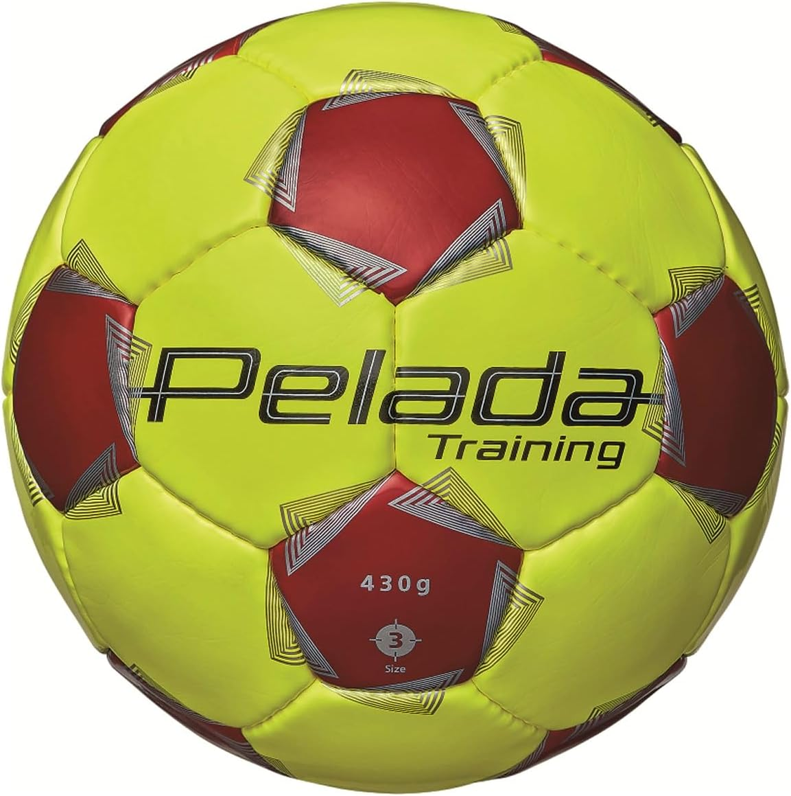
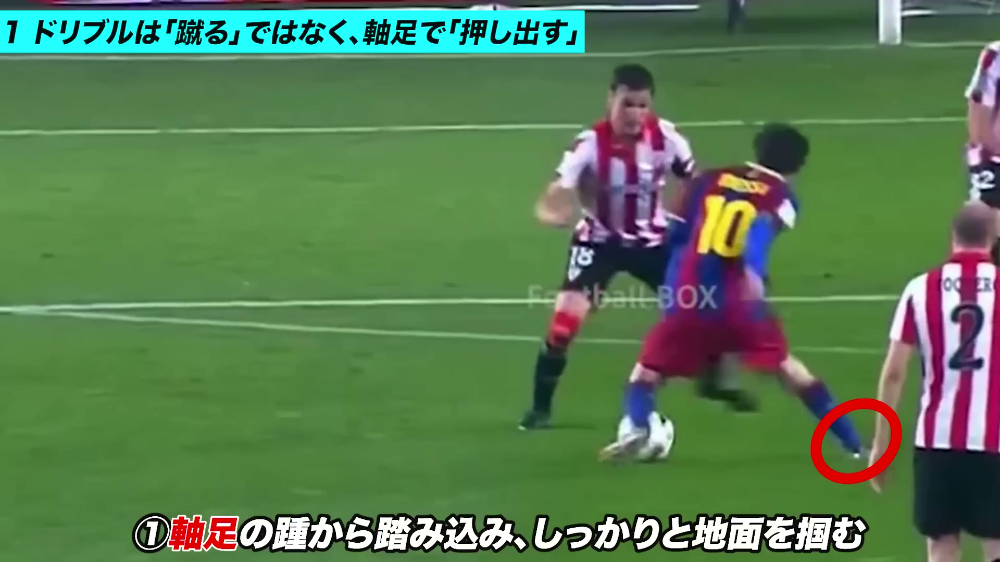
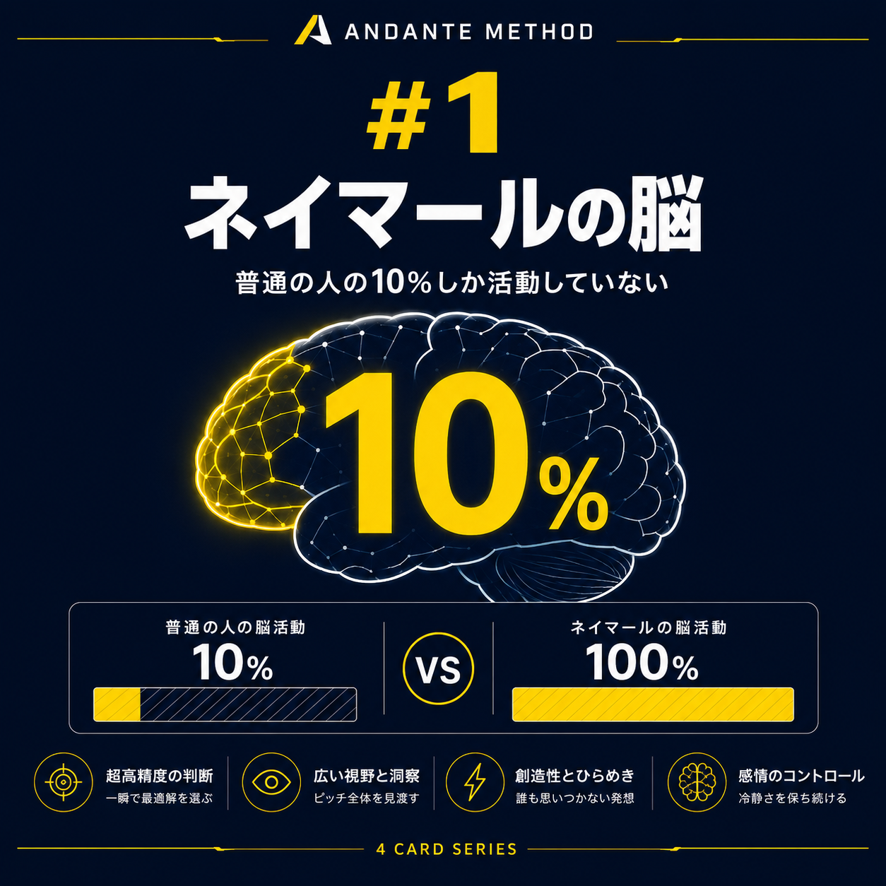
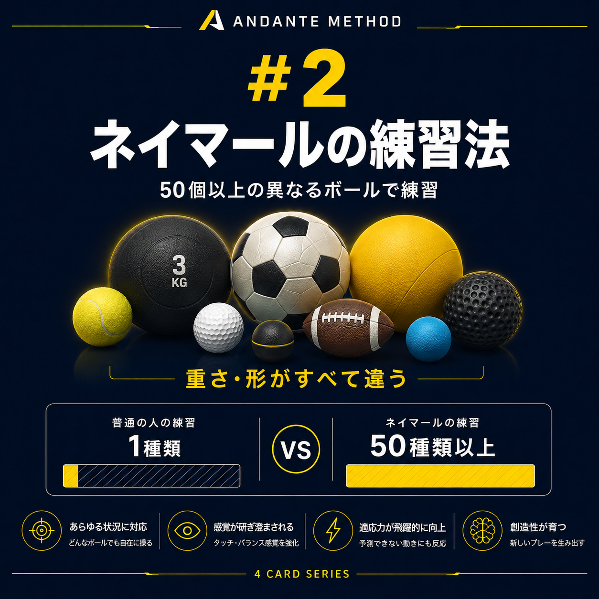
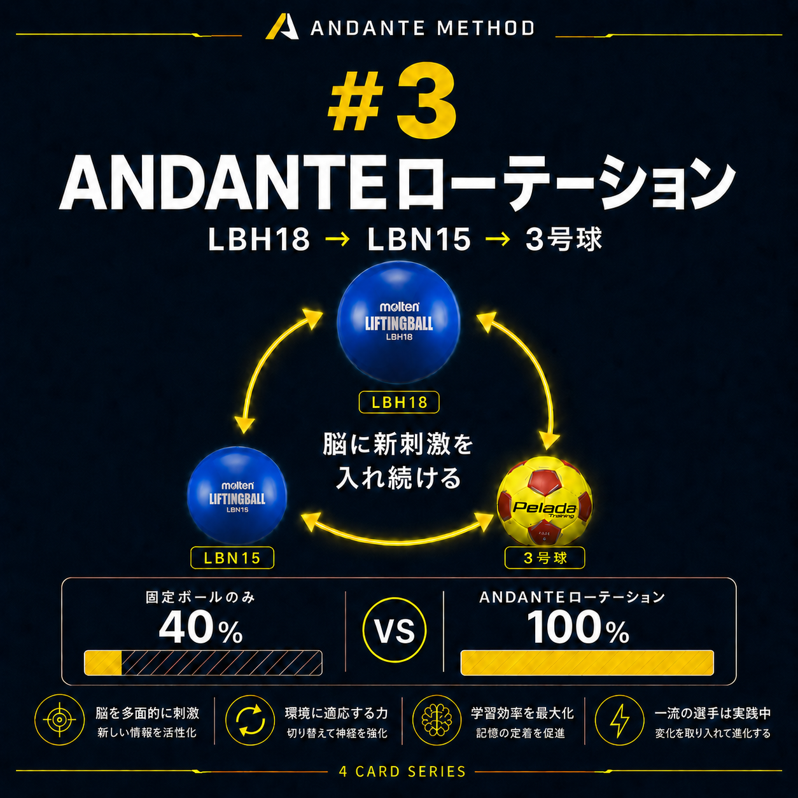
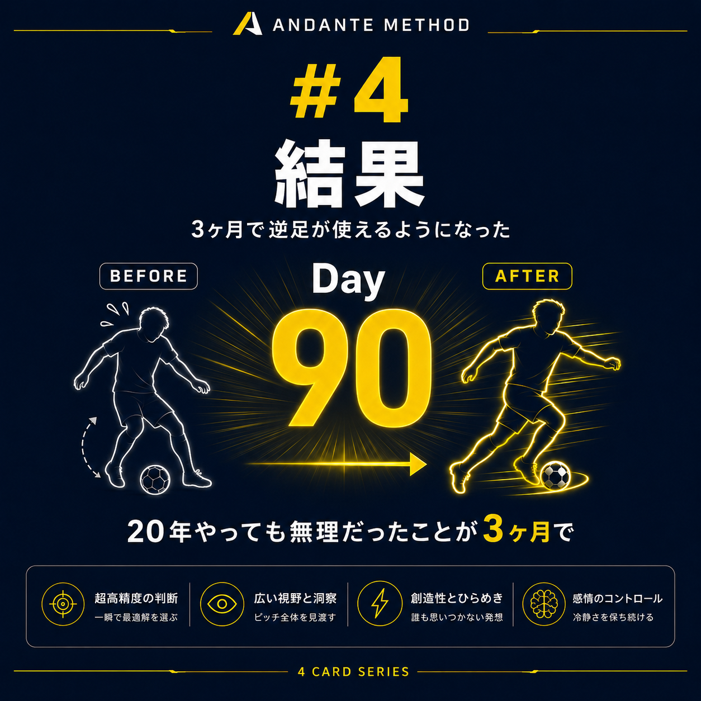

| ✅ | 強いhook（5/7メイン33%エンゲ率）→ 全投稿で踏襲 |
| ✅ | 視覚図解（5/7軸足25%）→ 全投稿に画像必須 |
| ✅ | 具体性（数字・商品名）→ 価格・期間・名前を全部入れる |
| ⚠️ | スレッドの最後は届かない（5/7❸ルーティン0%）→ 単発+自己リプの2層構造 |
| ⚠️ | 自己リプは見られにくい（5/7自己リプ5%）→ メインに核心、リプは補足 |
| 投稿① | シリーズ続編 + Amazon送客（LBH18 + 3号球予告） |
| 投稿③ | 強い意見「蹴り足は間違い」+ YouTube送客 |
| 投稿② | ネイマール研究で権威性 + 4枚カード保存稼ぐ |